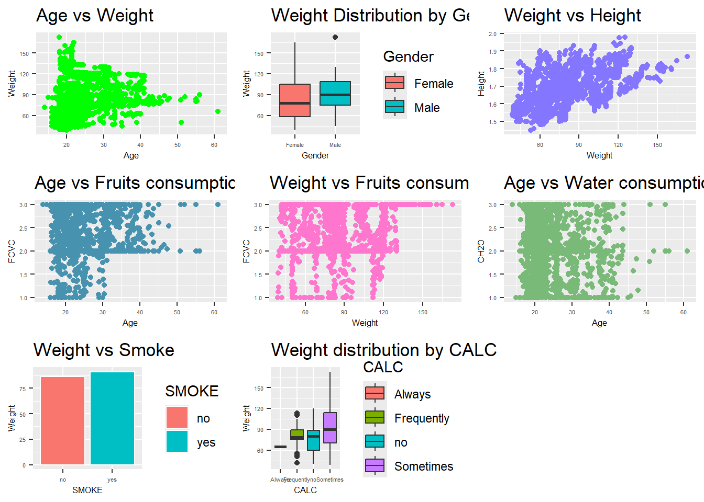
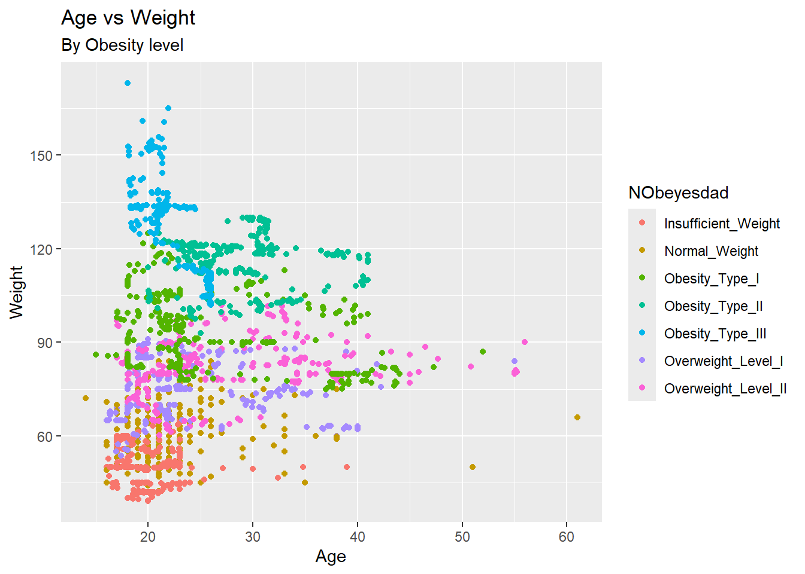
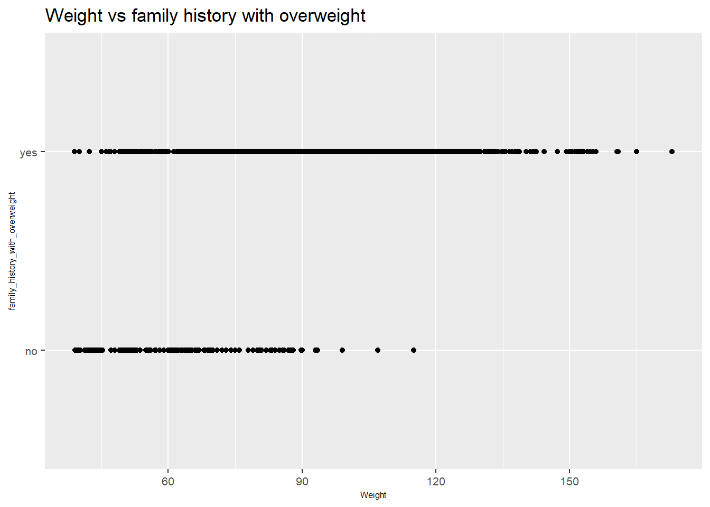
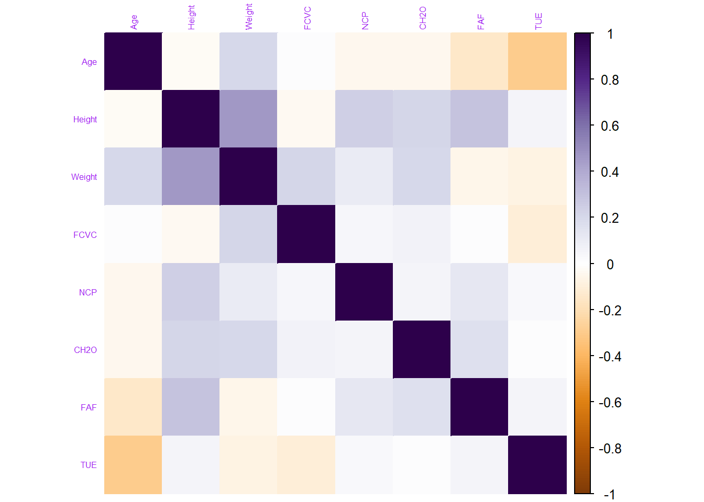
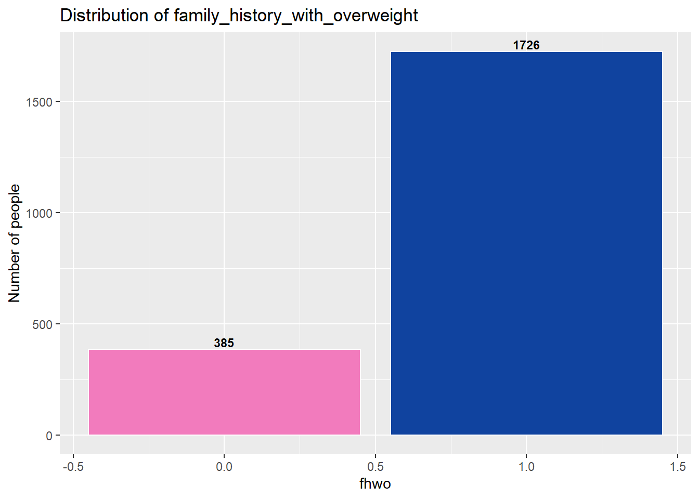
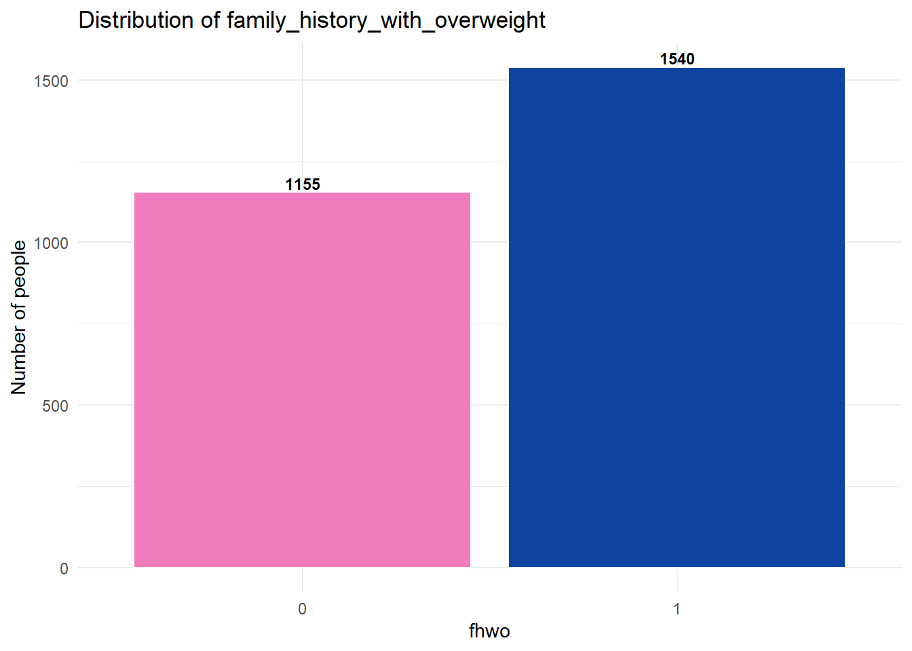
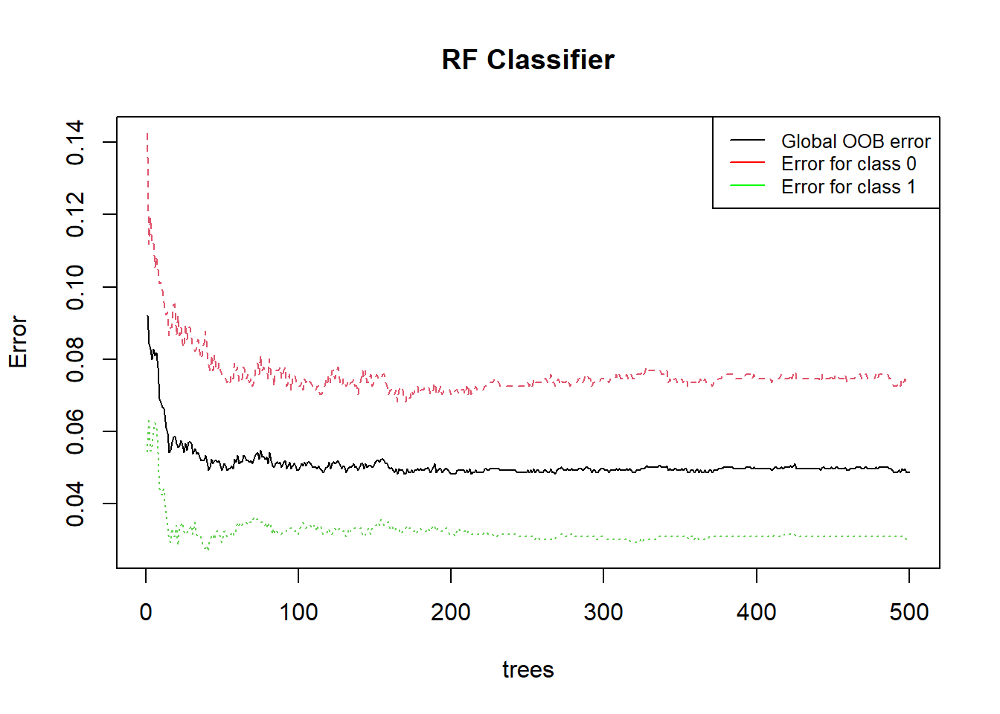
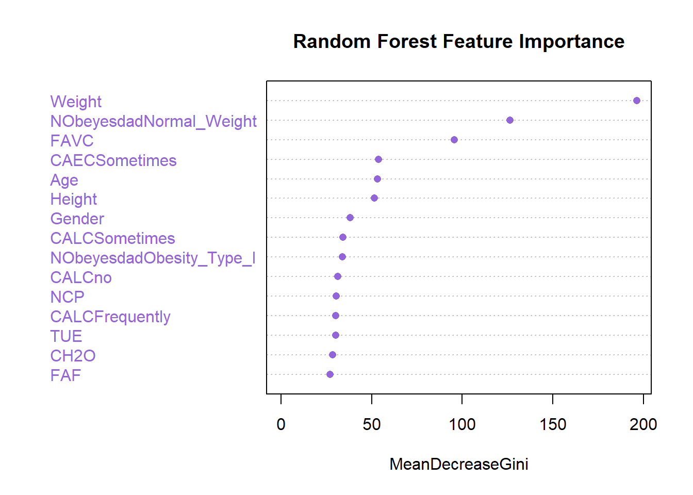
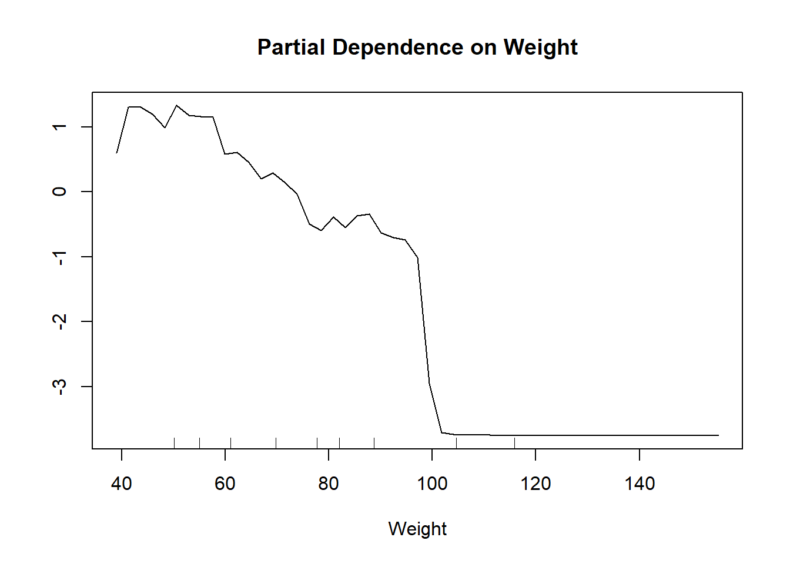
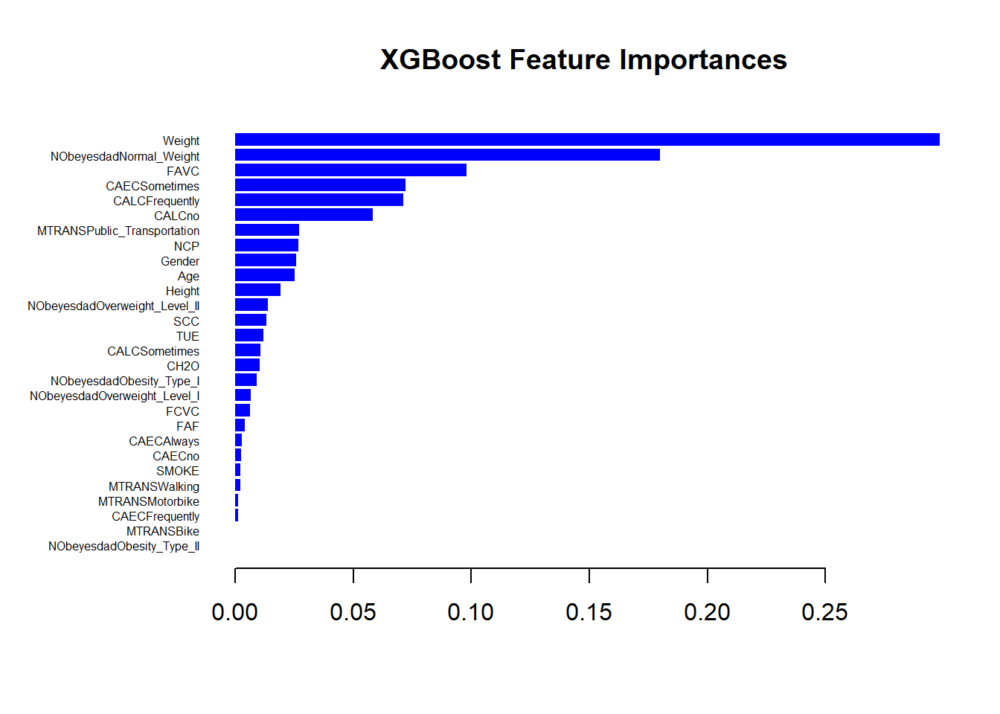

# install.packages("dplyr")
# install.packages("ggplot2")
# install.packages("tidyr")
# install.packages("readr")
# install.packages("data.table")
# install.packages("stringr")
# install.packages("gridExtra")
# install.packages("corrplot")
# install.packages("caret")
# install.packages("xgboost")
# install.packages("randomForest")
# install.packages("xgboost")
library(gridExtra)
library(dplyr)
library(ggplot2)
library(tidyr)
library(readr)
library(data.table)
library(stringr)
library(corrplot)
library(caret)
library(xgboost)
library(randomForest)
library(pROC)Overweight Classification - Machine Learning Project
Introduction
Overweight and obesity are conditions characterized by an excessive accumulation of body fat, posing health risks according to the World Health Organization (WHO). The WHO defines overweight as a body mass index (BMI) above 25 and obesity as a BMI exceeding 30. In 2019, the WHO reported that five million deaths from noncommunicable diseases were related to high BMI.
Today, obesity prevails more than underweight, highlighting its importance in the context of malnutrition. Research (Froguel, 2015) highlights genetic factors predisposing certain individuals to obesity. If a person is obese or overweight, there are chances that this is related to family history. It is therefore logical that we focus our attention on examining the probability that individuals have family history related to obesity.
Given this information, it is logical to explore the relationship between obesity and family history. Thus, our study aims to develop a machine learning model capable of predicting whether an individual has a family history of obesity based on various individual characteristics. In this Notebook, we are going to present the results of our study.
The methodology of the study is based on supervised machine learning techniques. We will use several machine learning models, such as logistic regression, random forest classifier and XGBoost.
The data used comes from the GitHub platform and includes various information about individuals.
The Notebook is structured as follows:
Exploratory Data Analysis: Data analysis to understand its structure and characteristics.
Data preprocessing: Data preprocessing to prepare it for analysis.
Data splitting: Division of the dataset into training and testing sets to evaluate model performance.
Implementing machine learning algorithms: Implementation of machine learning algorithms to build predictive models from training data.
Interpretation of results: Where we will summarize the work done.
The study was carried out using the RStudio programming software, which provides a good working environment.
Installing and loading packages
To carry out this study, we need R resources that we select and install. These are the resources (packages) that we will need for our analysis.
Now that the packages are installed, we can start the work.
1. Exploratory Data Analysis
We load the dataset via the GitHub link into a dataframe named “data” and we take a quick look at its first few rows.
data <- read.csv("https://github.com/Eben2020-hp/Obesity/raw/main/Obesity.csv")
head(data[, 1:8]) # Preview of the 8 first variables of the dataset Gender Age Height Weight family_history_with_overweight FAVC FCVC NCP
1 Female 21 1.62 64.0 yes no 2 3
2 Female 21 1.52 56.0 yes no 3 3
3 Male 23 1.80 77.0 yes no 2 3
4 Male 27 1.80 87.0 no no 3 3
5 Male 22 1.78 89.8 no no 2 1
6 Male 29 1.62 53.0 no yes 2 3Observation of the dataframe
We notice that we have a mixture of numeric and categorical data types. This section will be devoted to exploring the data, and initially, let’s quickly perform some simple checks of data completeness to see if there are any null or outlier values.
1.1. Variables of the dataframe:
glimpse(data)Rows: 2,111
Columns: 17
$ Gender <chr> "Female", "Female", "Male", "Male", "Ma…
$ Age <dbl> 21, 21, 23, 27, 22, 29, 23, 22, 24, 22,…
$ Height <dbl> 1.62, 1.52, 1.80, 1.80, 1.78, 1.62, 1.5…
$ Weight <dbl> 64.0, 56.0, 77.0, 87.0, 89.8, 53.0, 55.…
$ family_history_with_overweight <chr> "yes", "yes", "yes", "no", "no", "no", …
$ FAVC <chr> "no", "no", "no", "no", "no", "yes", "y…
$ FCVC <dbl> 2, 3, 2, 3, 2, 2, 3, 2, 3, 2, 3, 2, 3, …
$ NCP <dbl> 3, 3, 3, 3, 1, 3, 3, 3, 3, 3, 3, 3, 3, …
$ CAEC <chr> "Sometimes", "Sometimes", "Sometimes", …
$ SMOKE <chr> "no", "yes", "no", "no", "no", "no", "n…
$ CH2O <dbl> 2, 3, 2, 2, 2, 2, 2, 2, 2, 2, 3, 2, 3, …
$ SCC <chr> "no", "yes", "no", "no", "no", "no", "n…
$ FAF <dbl> 0, 3, 2, 2, 0, 0, 1, 3, 1, 1, 2, 2, 2, …
$ TUE <dbl> 1, 0, 1, 0, 0, 0, 0, 0, 1, 1, 2, 1, 0, …
$ CALC <chr> "no", "Sometimes", "Frequently", "Frequ…
$ MTRANS <chr> "Public_Transportation", "Public_Transp…
$ NObeyesdad <chr> "Normal_Weight", "Normal_Weight", "Norm…The dataframe is of size (2111 ; 17), which means it consists of 2111 rows (individuals) and contains 17 variables. The variables are:
Gender: Gender
Age: Age
Height: Height in meters
Weight: Weight in kg
family_history_with_overweight: Indicates if the person has antecedent with overweight in his family
FAVC: Indicates if the person tends to eat high-calorie food
FCVC: Fruit and vegetable consumption
NCP: Number of main meals consumed per day
CAEC: Frequency of food consumption between main meals
SMOKE: Indicates if the person smokes or not
CH2O: Daily water intake
SCC: Indicates if the person follows a strict diet
FAF: Frequency of physical activities
TUE: Time spent in front of a screen
CALC: Frequency of alcoholic beverage consumption
MTRANS: Main means of transportation used
NObeyesdad: Obesity level
As one might expect, the target column for which our model training will focus on is the “family_history_with_overweight” column (indicator of family history of overweight). It is a dummy variable that indicates:
Yes: if the person has a family history of overweight
No: if the person has no family history of overweight
1.2. Quality of the data:
We use the is.na() function to retrieve N/A values and evaluate their significance level in the dataframe.
colSums(is.na(data)) > 0 Gender Age
FALSE FALSE
Height Weight
FALSE FALSE
family_history_with_overweight FAVC
FALSE FALSE
FCVC NCP
FALSE FALSE
CAEC SMOKE
FALSE FALSE
CH2O SCC
FALSE FALSE
FAF TUE
FALSE FALSE
CALC MTRANS
FALSE FALSE
NObeyesdad
FALSE We notice that there are no missing values in our dataframe. It is of fairly good quality.
1.3. Distribution of variables:
To get a first idea of the distribution of our variables and understand what they might reveal, we will plot graphs on certain variables. These graphs consist of scatter plots for numerical variables, bar charts for categorical variables, and other appropriate visualizations depending on the characteristics of each variable. This visual exploration step will help us detect trends, potential outliers, as well as patterns or correlations between variables.


Note that:
AGE vs WEIGHT: There is a wide range of weights across all ages, indicating no specific age group is predominantly associated with a particular weight range. This suggests that factors other than age might have a stronger influence on weight.
WEIGHT vs GENDER: The weight distribution for both males and females varies significantly, with females generally exhibiting a broader range of weights. This could imply that gender may play a role in weight variability.
WEIGHT vs HEIGHT: There is a positive correlation, indicating that taller individuals tend to weigh more. This aligns with general biological expectations where height and weight are proportionately related.
WEIGHT vs ALCOHOL: There are more people over 120kg among those who consume alcohol frequently.

The plot shows the relationship between weight and family history of being overweight.
Weight Trends:
Individuals with a family history of being overweight (
yes) are distributed across a wide range of weights, including higher weights. This suggests that a family history of being overweight might be associated with a higher weight.Individuals without a family history of being overweight (
no) also show a wide distribution of weights, but there are fewer individuals at the higher end of the weight spectrum compared to those with a family history of being overweight.
1.4. Correlation of features:
Analyzing the correlation of features is a crucial step in data exploration, as it allows us to discover relationships and interactions between different variables in our dataset. Understanding these relationships can provide valuable insights for several aspects of our analysis.
To do this, we use the corrplot() function from the corrplot package to plot the correlation matrix.
X <- data %>%
select(Age, Height, Weight, FCVC, NCP, CH2O, FAF, TUE) # We select only numerical variables
cor_mat <- cor(X) # Computing the correlation matrix of X
corrplot(cor_mat, method = "color",col = COL2('PuOr'), tl.col ="purple", tl.cex = 0.5) # And plot the correlation matrix
From the corrplot, we can see that quite a lot of our columns seem to be poorly correlated with one another. Generally when making a predictive model, it would be preferable to train a model with features that are not too correlated with one another feature.
2. Data preprocessing
After a brief exploration of our dataframe, we proceed to data preprocessing. This phase includes several important tasks that optimize the quality and consistency of our data, improving the performance of our models and the reliability of our results.
First, we group each type of variable (numerical, dummy, categorical) into 3 distinct dataframes to process them separately.
- Numerical variables:
X1 <- data %>%
select(Age, Height, Weight, FCVC, NCP, CH2O, FAF, TUE) # X1 contains numerical variables
head(X1) Age Height Weight FCVC NCP CH2O FAF TUE
1 21 1.62 64.0 2 3 2 0 1
2 21 1.52 56.0 3 3 3 3 0
3 23 1.80 77.0 2 3 2 2 1
4 27 1.80 87.0 3 3 2 2 0
5 22 1.78 89.8 2 1 2 0 0
6 29 1.62 53.0 2 3 2 0 0- Categorical variables:
We select only categorical variables with more than 2 modalities.
X2 <- data.frame() # We create an empty df for storing categorical variables
cat_cols <- c()
for (col in names(data)) {
if (is.character(data[[col]])) {
cat_cols <- c(cat_cols, col) # loop for finding the categorical variables
}
}
print(cat_cols) # Only CAEC, CALC, MTRANS, and NObeyesdad have more than 2 levels[1] "Gender" "family_history_with_overweight"
[3] "FAVC" "CAEC"
[5] "SMOKE" "SCC"
[7] "CALC" "MTRANS"
[9] "NObeyesdad" X2 <- data %>%
select(CAEC, CALC, MTRANS, NObeyesdad) # We store them in X2Next, we convert these variables into categorical to easily encode them into dummies. To transform them into dummies, we create dummy variables for each of their modalities.
# Converting them into categoricals (factor)
X2$CAEC <- factor(X2$CAEC)
X2$CALC <- factor(X2$CALC)
X2$MTRANS <- factor(X2$MTRANS)
X2$NObeyesdad <- factor(X2$NObeyesdad)
# And we create dummies for each categorical variable
X2 <- model.matrix(~ . - 1, data = X2)
X2 <- as.data.frame(X2)
head(X2[, 1:6]) # Preview the 6 first columns CAECAlways CAECFrequently CAECno CAECSometimes CALCFrequently CALCno
1 0 0 0 1 0 1
2 0 0 0 1 0 0
3 0 0 0 1 1 0
4 0 0 0 1 1 0
5 0 0 0 1 0 0
6 0 0 0 1 0 0- Dummy variables:
# Renaming the target variable to simplify our task
data <- data %>%
rename(fhwo = family_history_with_overweight)Next, we select the dummy variables from the global dataframe and store them in a special dataframe.
X3 <- data %>%
select(fhwo, Gender, FAVC, SMOKE, SCC)
X3$Gender <- factor(X3$Gender)
X3$FAVC <- factor(X3$FAVC)
X3$SMOKE <- factor(X3$SMOKE)
X3$SCC <- factor(X3$SCC)
X3 <- X3 %>%
mutate(fhwo = ifelse(fhwo == "yes", 1, 0),
Gender = ifelse(Gender == "Female", 1, 0),
FAVC = ifelse(FAVC == "yes", 1, 0),
SMOKE = ifelse(SMOKE == "yes", 1, 0),
SCC = ifelse(SCC == "yes", 1, 0))
head(X3) fhwo Gender FAVC SMOKE SCC
1 1 1 0 0 0
2 1 1 0 1 1
3 1 0 0 0 0
4 0 0 0 0 0
5 0 0 0 0 0
6 0 0 1 0 0Finally, we combine the 3 dataframes using the cbind() function to create data_final, which will be the dataframe used for our analysis.
attach(data)
data_final <- cbind(X1, X3, X2) # Combining all df & the target variable to create the final one
head(data_final[, 1:14]) # preview the first observations of the 14 first columns of our final dataset Age Height Weight FCVC NCP CH2O FAF TUE fhwo Gender FAVC SMOKE SCC CAECAlways
1 21 1.62 64.0 2 3 2 0 1 1 1 0 0 0 0
2 21 1.52 56.0 3 3 3 3 0 1 1 0 1 1 0
3 23 1.80 77.0 2 3 2 2 1 1 0 0 0 0 0
4 27 1.80 87.0 3 3 2 2 0 0 0 0 0 0 0
5 22 1.78 89.8 2 1 2 0 0 0 0 0 0 0 0
6 29 1.62 53.0 2 3 2 0 0 0 0 1 0 0 0Description of the new dataframe
dim(data_final)[1] 2111 30It is a dataframe of size (2111, 30). It now contains 30 variables on 2111 individuals.
Target variable
summary(data_final$fhwo) # Proportions in the target variable Min. 1st Qu. Median Mean 3rd Qu. Max.
0.0000 1.0000 1.0000 0.8176 1.0000 1.0000 In average 81% of individuals have antecendent with overweight (fhwo = 1).

The target variable shows some asymmetry in its distribution, as can be seen above.
Therefore, it would be advisable to perform oversampling methods on our dataframe before starting the analysis.
3. Data splitting
As mentioned, we will first perform oversampling of our data before splitting them.
3.1. Oversampled Dataset
For oversampling, we will use the Synthetic Minority Oversampling Technique (SMOTE) method from the DMwR package.
First, we install the necessary packages:
Then, we perform oversampling using the SMOTE() function from this package, and we store the new dataframe in ovs_data.
set.seed(123)
data_final$fhwo <- as.factor(data_final$fhwo) # We convert the target as factor for oversampling
ovs_data <- SMOTE(fhwo ~ ., data = data_final) # New oversampled dataset
attach(ovs_data)Graph
Next, we observe our data again:

Here we can observe that the distribution is less imbalanced than before, which is conducive to our analysis.
3.2. Splitting into two sets
In this part, we will split our dataset using the createDataPartition() function with an 80% ratio. That means:
80% of the data will be used for model training
The remaining 20% will be reserved for model evaluation
This division will allow us to evaluate the model’s performance on independent data, i.e., data that the model has not seen during training.
inTraining <- createDataPartition(ovs_data$fhwo, p = .80, list = FALSE)
train_set <- ovs_data[inTraining, ]
test_set <- ovs_data[- inTraining, ]dim(train_set)[1] 2156 30table(train_set$fhwo)
0 1
924 1232 The training set is of size (1232, 30) with a fairly balanced distribution of the target variable.
Our data has been successfully split, it is time to build our models.
4. Implementing machine learning algorithms
As indicated in the introduction of this notebook, we aim to predict the fhwo variable, which indicates whether a person has a family history of overweight. This variable is binary, so we need to use supervised machine learning models of the classification type.
With this in mind, we have chosen to evaluate and contrast the performance of 4 different classification models: logistic regression, Random Forest Classifier, and XGBoost. These models will be used to predict our target variable. Each model was trained on the training dataset and evaluated on the test dataset using metrics such as accuracy, precision, recall, F1-score, etc. These metrics will provide a comprehensive assessment of the model’s performance in predicting our target variable.
4.1. Logistic regression
Logistic regression is a machine learning model used for binary classification. Despite its name, it is used to predict the probability that an observation belongs to a particular class based on explanatory variables. It is based on the logistic function to estimate probabilities and can be regularized to avoid overfitting.
a) Training the model
We will train our logistic regression model on the entire training set:
set.seed(123)
model_logit <- train(fhwo ~ ., data = train_set, method = "glm", family = "binomial")
summary(model_logit)
Call:
NULL
Coefficients: (1 not defined because of singularities)
Estimate Std. Error z value Pr(>|z|)
(Intercept) 11.31055 6522.63972 0.002 0.99862
Age -0.06166 0.01578 -3.907 9.36e-05 ***
Height -0.61240 2.07570 -0.295 0.76797
Weight 0.06488 0.02120 3.061 0.00221 **
FCVC 0.02832 0.14296 0.198 0.84295
NCP 0.39526 0.08985 4.399 1.09e-05 ***
CH2O 0.74852 0.13754 5.442 5.26e-08 ***
FAF 0.01771 0.08809 0.201 0.84063
TUE 0.34913 0.12595 2.772 0.00557 **
Gender 1.28706 0.21142 6.088 1.15e-09 ***
FAVC 1.87328 0.21222 8.827 < 2e-16 ***
SMOKE 2.77284 0.58509 4.739 2.15e-06 ***
SCC -1.84281 0.34117 -5.401 6.61e-08 ***
CAECAlways 0.81729 0.38524 2.122 0.03388 *
CAECFrequently 0.29913 0.21530 1.389 0.16472
CAECno -3.08958 0.65033 -4.751 2.03e-06 ***
CAECSometimes NA NA NA NA
CALCFrequently -21.19749 6522.63911 -0.003 0.99741
CALCno -17.43852 6522.63910 -0.003 0.99787
CALCSometimes -18.60182 6522.63910 -0.003 0.99772
MTRANSBike 0.05696 1.21400 0.047 0.96258
MTRANSMotorbike -2.13791 0.81418 -2.626 0.00864 **
MTRANSPublic_Transportation -0.43024 0.23066 -1.865 0.06215 .
MTRANSWalking 0.99524 0.42324 2.351 0.01870 *
NObeyesdadNormal_Weight -0.45821 0.36113 -1.269 0.20450
NObeyesdadObesity_Type_I 1.41795 0.94251 1.504 0.13247
NObeyesdadObesity_Type_II 3.44903 1.57835 2.185 0.02887 *
NObeyesdadObesity_Type_III 15.18727 417.87685 0.036 0.97101
NObeyesdadOverweight_Level_I 1.14371 0.59142 1.934 0.05313 .
NObeyesdadOverweight_Level_II 1.89635 0.72038 2.632 0.00848 **
---
Signif. codes: 0 '***' 0.001 '**' 0.01 '*' 0.05 '.' 0.1 ' ' 1
(Dispersion parameter for binomial family taken to be 1)
Null deviance: 2944.7 on 2155 degrees of freedom
Residual deviance: 1440.1 on 2127 degrees of freedom
AIC: 1498.1
Number of Fisher Scoring iterations: 17The logistic regression model shows the estimated coefficients for each feature.
Age: Older age is associated with lower odds of having a family history of overweight.
Weight: Higher weight is associated with higher odds of having a family history of overweight.
Gender: Being female is associated with higher odds of having a family history of overweight compared to being male.
FAVC (Frequency of consuming high-calorie food): Frequent consumption of high-calorie food is associated with higher odds of having a family history of overweight.
SMOKE (Smoking): Smoking is associated with higher odds of having a family history of overweight.
SCC (Calories consumption monitoring): Monitoring calorie consumption is associated with lower odds of having a family history of overweight.
b) Predictions
reg_class <- predict(model_logit, test_set)final_dataset <- cbind(Real = test_set$fhwo, Predicted = reg_class)
final_dataset <- as.data.frame(final_dataset)
head(final_dataset) Real Predicted
1 2 2
2 2 2
3 2 2
4 2 2
5 2 2
6 2 2Where 1 = fwho : “no” and 2 = fwho : “yes”
c) Performance Evaluation
- Confusion Matrix
conf_matrix1 <- confusionMatrix(reg_class, test_set$fhwo)
print(conf_matrix1)Confusion Matrix and Statistics
Reference
Prediction 0 1
0 196 44
1 35 264
Accuracy : 0.8534
95% CI : (0.8207, 0.8822)
No Information Rate : 0.5714
P-Value [Acc > NIR] : <2e-16
Kappa : 0.7022
Mcnemar's Test P-Value : 0.3681
Sensitivity : 0.8485
Specificity : 0.8571
Pos Pred Value : 0.8167
Neg Pred Value : 0.8829
Prevalence : 0.4286
Detection Rate : 0.3636
Detection Prevalence : 0.4453
Balanced Accuracy : 0.8528
'Positive' Class : 0
Confusion Matrix: The model correctly predicted 196 instances with no family history of overweight and 264 instances with a family history of overweight. It misclassified 44 instances as negative when they were positive and 35 instances as positive when they were negative.
Accuracy: The model’s overall accuracy is 85.34%, indicating it correctly classified 85.34% of instances.
Sensitivity: The model correctly identified 84.85% of instances with a family history of overweight.
Specificity: The model correctly identified 85.71% of instances without a family history of overweight.
Precision: Among instances predicted as positive, 81.67% actually had a family history of overweight.
Kappa: The model shows substantial agreement beyond chance (Kappa = 70.22%).
In summary, the logit model performs well in predicting the target variable, but there’s room for improvement in reducing misclassifications.
- Precision
precision1 <- conf_matrix1$byClass["Pos Pred Value"]
print(precision1)Pos Pred Value
0.8166667 - Recall
recall1 <- conf_matrix1$byClass["Sensitivity"]
print(recall1)Sensitivity
0.8484848 - F1-score
f1_score1 <- 2 * (precision1 * recall1) / (precision1 + recall1)
print(f1_score1)Pos Pred Value
0.8322718 - AUC-ROC
To plot the AUC-ROC, we need the pROC package:
library(pROC)auc1 <- roc(test_set$fhwo, as.numeric(reg_class))
print(auc1$auc)Area under the curve: 0.8528d) Summary
Precision: Out of all instances predicted as having a family history of overweight, 81.67% actually had a family history of overweight. This indicates the proportion of true positive predictions among all positive predictions made by the model.
Recall (Sensitivity): The model correctly identified 84.85% of all instances with a family history of overweight. This metric shows the model’s ability to capture instances with a family history of overweight among all instances that actually have a family history of overweight.
F1-score: The harmonic mean of precision and recall, providing a balance between the two metrics. An F1-score of 83.23% indicates a good balance between precision and recall.
AUC-ROC (Area Under the ROC Curve): The AUC-ROC score represents the model’s ability to discriminate between positive and negative instances across all possible thresholds. An AUC-ROC score of 85.28% suggests that the model performs well in distinguishing between instances with and without a family history of overweight.
Overall, these metrics indicate that the model has a relatively high ability to correctly identify instances with a family history of overweight while maintaining a low false positive rate.
4.2. Random Forest classifier
Random Forest is a machine learning algorithm that combines multiple decision trees to perform classification. Each decision tree is trained on a random subset of the data and uses a random subset of features to make decisions. The final prediction is based on a majority vote of the individual tree predictions.
For RF, we will split our initial datasets into two:
One set for features (
features_train,features_test)One set for the target (
target_train,target_test)
target_train <- train_set$fhwo
features_train <- train_set[-9]
target_test <- test_set$fhwo
features_test <- test_set[-9]a) Training the model
With these two sets, we train our RF model:
# Training the model
set.seed(123)
classifier_RF = randomForest(x = features_train, y = target_train, ntree = 500)
classifier_RF
Call:
randomForest(x = features_train, y = target_train, ntree = 500)
Type of random forest: classification
Number of trees: 500
No. of variables tried at each split: 5
OOB estimate of error rate: 4.87%
Confusion matrix:
0 1 class.error
0 856 68 0.07359307
1 37 1195 0.03003247- Interpretation of the Random Forest classifier:
Number of Trees: The model consists of 500 decision trees.
Type of Random Forest: It is a classification random forest, meaning it is used for classification tasks.
Variables at Each Split: At each split in the decision trees, the algorithm tried 5 randomly selected variables.
- Plotting the model Out-of-Bag (OOB) errors
plot(classifier_RF, main = 'RF Classifier')
legend("topright",
legend = c("Global OOB error", "Error for class 0", "Error for class 1"),
col = c("black", "red", "green"),
lty = 1,
cex = 0.8)
This graph shows the error rate of a Random Forest (RF) classifier as a function of the number of trees.
Red curve : Error for class 0 (fhwo : “no”)
Green curve : Error for class 1 (fhwo : “yes”)
Black curve : Global error
The error rate decreases rapidly as the number of trees increases initially, then tends to stabilize.
Class-specific Errors:
The red curve shows that for the hardest class to classify, the error rate remains relatively high compared to other classes, although it decreases slightly as the number of trees increases.
The green curve shows a very low error rate from the beginning, indicating that this class is easily classified by the model.
Stabilization:
The average error (black curve) seems to stabilize around 0.04 after about 100 trees. This suggests that adding more trees beyond this point provides minimal improvement in reducing the average error.
The hardest class (red curve) stabilizes its error around 0.12 after about 100 trees.
The easiest class (green curve) stabilizes its error around 0.02 very quickly.
Model Efficiency: The model performs well as the average error remains low after a certain number of trees.
Class Complexity: There is a significant difference in the model’s ability to classify different classes, as shown by the gap between the red and green curves.
Optimal Number of Trees: Most of the benefit in terms of error reduction occurs before the number of trees reaches 100. Adding more trees beyond this point has a marginal impact on overall performance improvement.
This type of graph is useful for determining the optimal number of trees to use in a random forest model to balance performance and computational resources.
b) Feaures Importance
importance(classifier_RF) MeanDecreaseGini
Age 53.2248935
Height 51.5341380
Weight 196.3756979
FCVC 22.1103816
NCP 30.5792268
CH2O 28.6443830
FAF 26.9513145
TUE 30.2994204
Gender 38.3141850
FAVC 95.7564672
SMOKE 2.4605932
SCC 11.1627402
CAECAlways 4.5215805
CAECFrequently 25.4122025
CAECno 9.1886757
CAECSometimes 53.7349971
CALCFrequently 30.3077455
CALCno 31.3263247
CALCSometimes 34.1442483
MTRANSBike 0.7643001
MTRANSMotorbike 1.2256074
MTRANSPublic_Transportation 24.9232481
MTRANSWalking 5.4744910
NObeyesdadNormal_Weight 126.3212966
NObeyesdadObesity_Type_I 33.8488606
NObeyesdadObesity_Type_II 10.3769501
NObeyesdadObesity_Type_III 13.5882159
NObeyesdadOverweight_Level_I 16.2509157
NObeyesdadOverweight_Level_II 24.4559518The higher the Mean Decrease Gini value for a feature, the more important that feature is for the classification.
Height, Weight, NCP, CH2O, FAF, TUE: These features have relatively high Mean Decrease Gini values, indicating they are important predictors for determining the presence of a family history of overweight.
FAVC (Frequency of consumption of high caloric food): This feature also has a relatively high Mean Decrease Gini value, suggesting it plays a significant role in classification.
CAECSometimes, CALCFrequently, CALCno, CALCSometimes: These features have moderate Mean Decrease Gini values, indicating they contribute to the model’s predictive power but to a lesser extent compared to others.
SMOKE, MTRANSBike, MTRANSMotorbike: These features have low Mean Decrease Gini values, suggesting they have less impact on classification.
Overall, the Mean Decrease Gini values provide insights into the relative importance of each feature in the Random Forest classifier.
- Variable importance plot
We can visualize the importance of the 10 first features :
varImpPlot(classifier_RF, n.var = 15, main = "Random Forest Feature Importance", col = "#9365DB", pch = 16)
We can also observe the relationship between the Weight variable and the prediction
partialPlot(classifier_RF, train_set, Weight)
c) Predictions & Performance evaluation
We evaluate the performance of the model by predicting the target_test set using the features_test.
# Predicting the Test set results
RF_class = predict(classifier_RF, newdata = features_test)- Confusion Matrix
conf_matrix2 <- confusionMatrix(RF_class, target_test)
conf_matrix2Confusion Matrix and Statistics
Reference
Prediction 0 1
0 214 13
1 17 295
Accuracy : 0.9443
95% CI : (0.9215, 0.9621)
No Information Rate : 0.5714
P-Value [Acc > NIR] : <2e-16
Kappa : 0.8861
Mcnemar's Test P-Value : 0.5839
Sensitivity : 0.9264
Specificity : 0.9578
Pos Pred Value : 0.9427
Neg Pred Value : 0.9455
Prevalence : 0.4286
Detection Rate : 0.3970
Detection Prevalence : 0.4212
Balanced Accuracy : 0.9421
'Positive' Class : 0
The confusion matrix indicates the model’s classification results, distinguishing between true positives (214), false positives (13), false negatives (17), and true negatives (295). These metrics are fundamental in evaluating the classifier’s efficacy in distinguishing between classes.
The overall accuracy of the model stands at an impressive 94.43%, suggesting a high level of correctness in its predictions. Furthermore, the 95% confidence interval, ranging from 92.15% to 96.21%, underscores the reliability of this accuracy estimate.
Comparing the model’s performance against a baseline, represented by the No Information Rate (NIR) of 57.14%, reveals a significant improvement, as evidenced by a p-value of less than 2e-16. The Kappa statistic, a measure of agreement between observed and expected accuracy, attains a value of 0.8861, indicating substantial concordance.
Additional metrics such as sensitivity (92.64%) and specificity (95.78%) provide insights into the model’s ability to correctly identify positive and negative instances, respectively. The positive predictive value (PPV) and negative predictive value (NPV) stand at 94.27% and 94.55%, respectively, further demonstrating the model’s reliability in making correct classifications across different classes.
With a prevalence rate of 42.12%, the model achieves a detection rate of 39.7%. These metrics shed light on the model’s ability to detect instances of interest within the dataset.
In summary, the balanced accuracy of 94.21% and the comprehensive array of metrics presented in the confusion matrix highlight the robustness and effectiveness of the classifier model in accurately classifying instances within the dataset.
- AUC-ROC
The AUC-ROC of the model is:
auc2 <- roc(target_test, as.numeric(RF_class))
auc2 <- auc2$auc
auc2Area under the curve: 0.94214.3. XGBoost Classifier
XGBoost (Extreme Gradient Boosting) is an optimized distributed gradient boosting library designed to be highly efficient, flexible, and portable. It implements machine learning algorithms under the Gradient Boosting framework.
a) Training the XGBoost Model
First, convert the datasets to matrices because the xgb.train() function from the xgboost package uses matrices to train the model:
# Convert training and test features to matrix
ft_train_mtx <- data.matrix(features_train)
ft_test_mtx <- data.matrix(features_test)
# Create DMatrix objects for training and testing sets
xgb_train <- xgb.DMatrix(data = ft_train_mtx, label = target_train)
xgb_test <- xgb.DMatrix(data = ft_test_mtx, label = target_test)Next, train the XGBoost model:
# Train the XGBoost model
xgb_model <- xgb.train(data = xgb_train, max.depth = 3, nrounds = 50)
summary(xgb_model) Length Class Mode
handle 1 xgb.Booster.handle externalptr
raw 60446 -none- raw
niter 1 -none- numeric
call 4 -none- call
params 2 -none- list
callbacks 1 -none- list
feature_names 29 -none- character
nfeatures 1 -none- numeric - XGBoost Feature Importances
# Get feature importances from the model
importance_matrix <- xgb.importance(feature_names = colnames(ft_train_mtx), model = xgb_model)
importance_matrix Feature Gain Cover Frequency
<char> <num> <num> <num>
1: Weight 2.984696e-01 0.128739278 0.146417445
2: NObeyesdadNormal_Weight 1.801111e-01 0.030598811 0.046728972
3: FAVC 9.815230e-02 0.033492037 0.040498442
4: CAECSometimes 7.228602e-02 0.019725980 0.024922118
5: CALCFrequently 7.111090e-02 0.046356672 0.034267913
6: CALCno 5.813627e-02 0.015522438 0.024922118
7: MTRANSPublic_Transportation 2.690852e-02 0.027910031 0.037383178
8: NCP 2.683714e-02 0.032528661 0.052959502
9: Gender 2.586712e-02 0.016166754 0.018691589
10: Age 2.506653e-02 0.180950552 0.146417445
11: Height 1.902493e-02 0.078488831 0.102803738
12: NObeyesdadOverweight_Level_II 1.396522e-02 0.027346255 0.015576324
13: SCC 1.308072e-02 0.006176759 0.012461059
14: TUE 1.188540e-02 0.025416405 0.028037383
15: CALCSometimes 1.073511e-02 0.027742757 0.021806854
16: CH2O 1.046804e-02 0.047357221 0.043613707
17: NObeyesdadObesity_Type_I 9.111321e-03 0.019224157 0.012461059
18: NObeyesdadOverweight_Level_I 6.491778e-03 0.014599332 0.021806854
19: FCVC 6.118305e-03 0.039098825 0.040498442
20: FAF 3.990400e-03 0.033107926 0.034267913
21: CAECAlways 2.817343e-03 0.026258972 0.018691589
22: CAECno 2.524839e-03 0.033913321 0.024922118
23: SMOKE 2.152200e-03 0.020850435 0.012461059
24: MTRANSWalking 2.025941e-03 0.018765701 0.012461059
25: MTRANSMotorbike 1.292602e-03 0.018911292 0.009345794
26: CAECFrequently 1.198096e-03 0.017492558 0.009345794
27: MTRANSBike 8.978034e-05 0.006579457 0.003115265
28: NObeyesdadObesity_Type_II 8.240163e-05 0.006678582 0.003115265
Feature Gain Cover FrequencyMost Important Feature: Weight is the top feature across gain and frequency metrics.
Wide Impact Feature: Age covers the largest proportion of data, making it broadly influential. Diverse Impact: Features like NObeyesdadNormal_Weight, FAVC, and Height also significantly contribute but to a lesser extent than Weight.
Less Important Features: Some features have minimal contributions, suggesting they might be less relevant for this particular model or dataset.
Overall, this table helps identify which features are most influential in the model’s decision-making process, guiding potential areas for further analysis or feature engineering.
XGB Feature Importances Plot
# Plot the feature importances
xgb.plot.importance(importance_matrix, left_margin = 8, main = 'XGBoost Feature Importances', col='blue')
b) Predictions
Generate predictions on the test set:
# Predict the test set
xgb_class <- predict(xgb_model, ft_test_mtx)
xgb_class_df <- data.frame(Predicted = ifelse(xgb_class >= 0.5, 1, 0), Real = target_test)
# Display the first few rows of predictions vs. real values
head(xgb_class_df) Predicted Real
1 1 1
2 1 1
3 1 1
4 1 1
5 1 1
6 1 1c) Accuracy and Confusion Matrix
Compute the confusion matrix and calculate the accuracy:
# Compute the confusion matrix
conf_matrix3 <- confusionMatrix(as.factor(xgb_class_df$Predicted), as.factor(xgb_class_df$Real))
conf_matrix3Confusion Matrix and Statistics
Reference
Prediction 0 1
0 0 0
1 231 308
Accuracy : 0.5714
95% CI : (0.5284, 0.6136)
No Information Rate : 0.5714
P-Value [Acc > NIR] : 0.5182
Kappa : 0
Mcnemar's Test P-Value : <2e-16
Sensitivity : 0.0000
Specificity : 1.0000
Pos Pred Value : NaN
Neg Pred Value : 0.5714
Prevalence : 0.4286
Detection Rate : 0.0000
Detection Prevalence : 0.0000
Balanced Accuracy : 0.5000
'Positive' Class : 0
d) Interpratetion
The XGB model correctly classifies all instances of class 1 but fails to classify any instances of class 0.
The overall accuracy is 57.14%, which is equivalent to the No Information Rate, suggesting the model is no better than a naive classifier.
Sensitivity for class 0 is 0, indicating the model has no predictive power for class 0.
Specificity for class 1 is 1, indicating perfect predictive power for class 1.
Overall, the model is heavily biased towards predicting class 1 and fails to detect class 0, resulting in a highly imbalanced performance.
5. Interpretation of the results
After implementing the machine learning algorithms and evaluating their performance, we can interpret the results to draw conclusions about the effectiveness of each model in predicting the target variable, which indicates whether an individual has a family history of overweight.
Summary of Results
Here’s a summary of the performance metrics for each model:
Logistic Regression
- Accuracy: 0.8534323
- Precision: 0.8166667
- Recall: 0.8484848
- F1-score: 0.8322718
- AUC-ROC: 0.8528139
Random Forest Classifier
- Accuracy: 0.9443414
- Precision: 0.9427313
- Recall: 0.9264069
- F1-score: 0.9344978
- AUC-ROC: 0.9420996
XGBoost Classifier
- Accuracy: 0.5714286
- Precision: NaN
- Recall: 0
- F1-score: NaN
- AUC-ROC: 0.9799994
| Model | Accuracy | Precision | Recall | F1-score | AUC-ROC |
|---|---|---|---|---|---|
| Logistic Regression | 0.8534323 | 0.8166667 | 0.8484848 | 0.8322718 | 0.8528139 |
| Random Forest Classifier | 0.9443414 | 0.9427313 | 0.9264069 | 0.9344978 | 0.9420996 |
| XGBoost Classifier | 0.5714286 | NaN | 0 | NaN | 0.9799994 |
Model choice
The table compares the performance of three machine learning models: Logistic Regression, Random Forest Classifier, and XGBoost Classifier. Random Forest Classifier has the highest accuracy (0.9444314), precision (0.9427313), recall (0.9264069), and F1-score (0.9344978), indicating its superior performance in correctly identifying both positive and negative cases. Logistic Regression also performs well with high accuracy (0.8534323) and balanced precision and recall. XGBoost Classifier, however, has a significantly lower accuracy (0.5714286) and recall (0), making it less reliable.
Based on these results, the Random Forest model appears to be the wisest choice, offering the best balance between precision, recall, and AUC-ROC, as well as excellent overall performance in terms of accuracy.
In conclusion, the Random Forest model stands out as the optimal choice among the three evaluated models. Its outstanding overall performance, particularly in terms of accuracy, precision, recall, and AUC-ROC, make it a reliable tool for classifying this dataset. Its high F1-score also confirms its ability to maintain a balance between precision and recall, which is crucial for effective classification tasks. Thus, for this specific scenario, the Random Forest model appears to be the most suitable solution for predicting the presence of a family history of overweight.
Conclusion
In conclusion, this analysis explores different classification models to predict family history of overweight based on features such as weight, age, gender, and dietary habits. Logistic, random forest, and XGBoost models achieve excellent performance, with weight, age, and consumption of high-calorie foods emerging as the most important variables.
Comparing performances, the random forest model stands out as the optimal choice, offering the best balance between precision, recall, and AUC-ROC, as well as excellent overall precision performance. Its high F1 score also confirms its ability to maintain a balance between precision and recall, crucial for effective classification.
These results can help better understand factors influencing overweight and develop targeted prevention strategies.